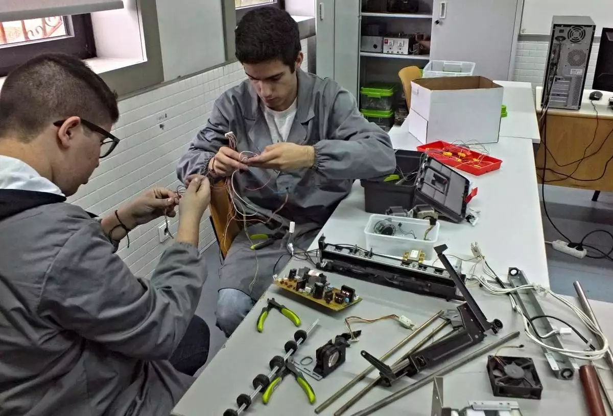

📕Descrição
O técnico em Automação Industrial é o profissional que projeta, instala, programa, integra e realiza a manutenção em sistemas aplicados à automação e controle; analisa especificações de componentes e equipamentos que compõem sistemas automatizados; coordena equipes de trabalho e avalia a qualidade de dispositivos e sistemas automatizados. Programa, opera e mantém os sistemas automatizados respeitando normas técnicas de segurança.
📖Eixo-Tecnológico
CONTROLE E PROCESSOS INDUSTRIAIS
📈Atuação
Empresas de manutenção e reparos; laboratórios de controle de qualidade; empresas integradoras de sistemas de automação industrial; fabricantes de máquinas, componentes e equipamentos robotizados; grupos de pesquisa que desenvolvam projetos na área de sistemas elétricos; indústrias com linhas de produção automatizadas, químicas, petroquímicas, de exploração e produção de petróleo, aeroespaciais, automobilística, metalomecânica e plástico.
💼Onde trabalhar
Indústrias petroquímicas, automobilísticas, alimentícias e de energia; laboratórios de controle de qualidade, de manutenção e pesquisa; empresas de prestação de serviços e como profissional autônomo.
📆Duração do Curso
18 meses (3 semestre).
🕗Horário de aula
Seg - Sex / 19:00-23:00.
Oficina
